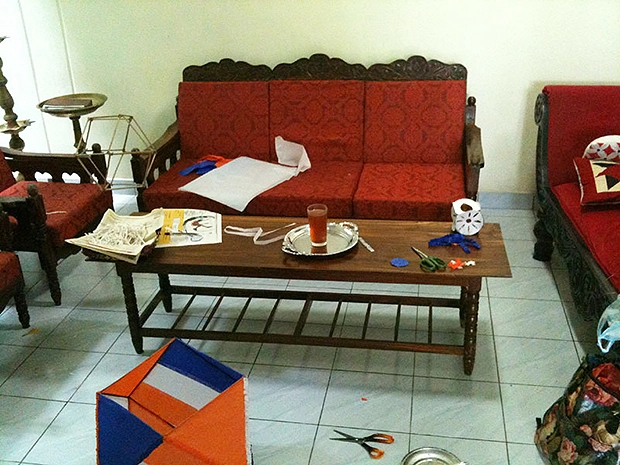
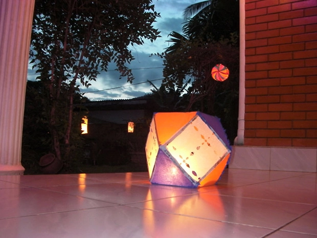
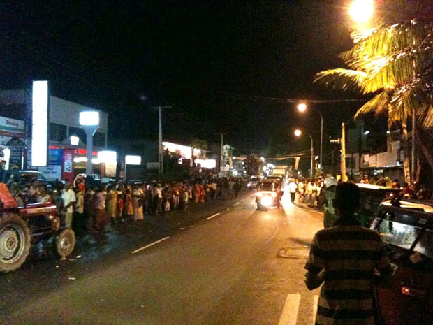
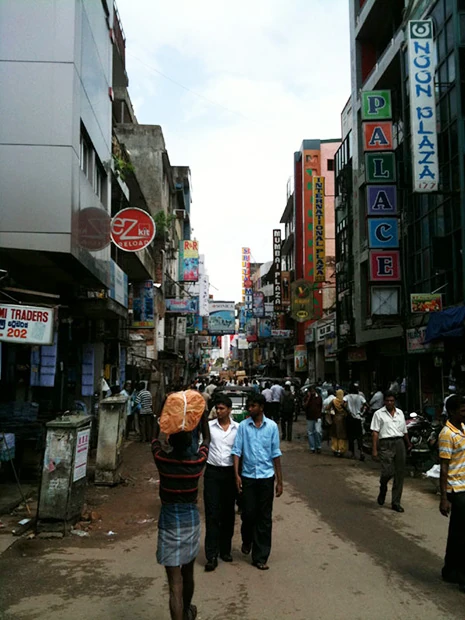
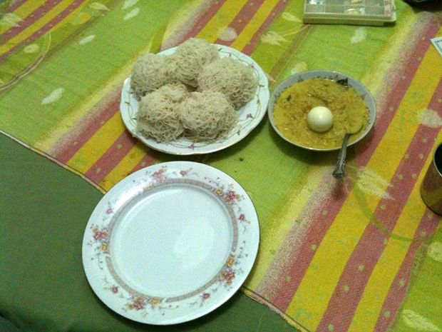
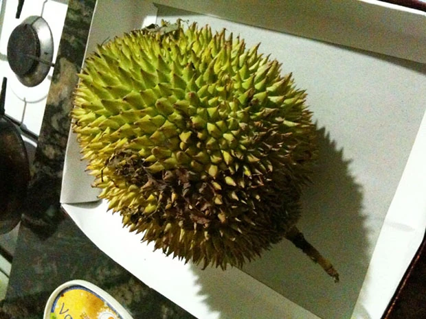
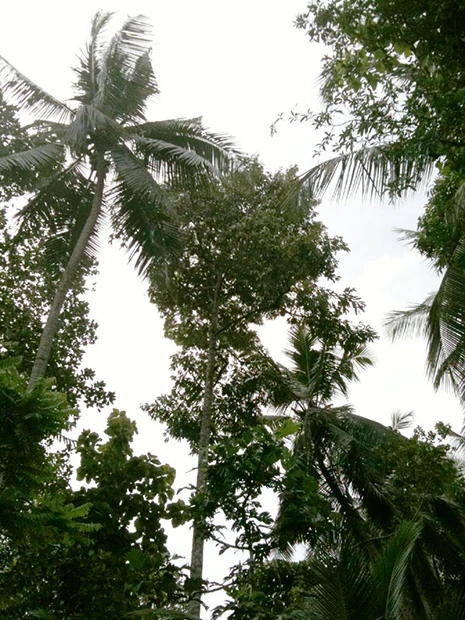
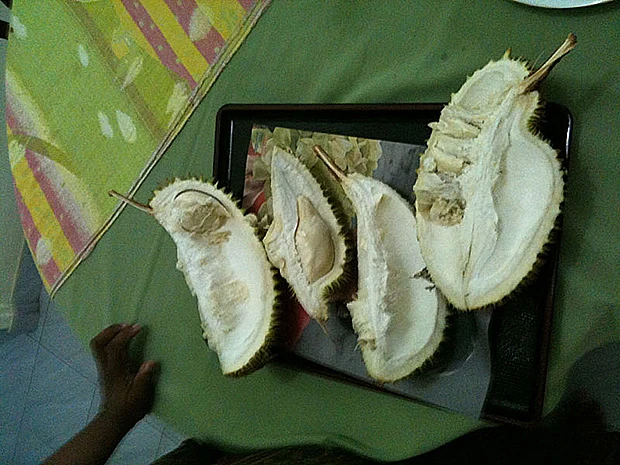
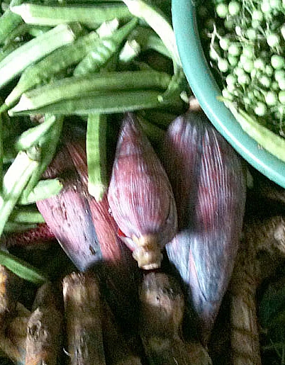
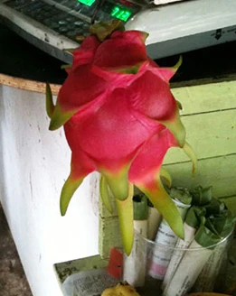

「いざスリランカへ！とうとう来た！
出国ゲートを出ると、
ホストマザーの女性が私の名前の入ったプレートを持って待っていました！
かなり感激です！
なんせここで出会えなかったら、私は今晩宿無し。
途方にくれるところですから！
自己紹介をし終えて、私が『お金を両替したい』と伝えると『私の住んでいる街でも両替出来るから。問題無いですよ』と。
2人して空港ターミナルを出てスリランカ人男性(ホストマザーの近所のお兄さんで、トゥクトゥクパーツショップ経営)が 運転する車で、ホストマザーの自宅に向かいました。
道中は深夜というのもあって、真っ暗。
あと心の余裕が全く無いので、車窓は全く覚えていません苦笑。
初スリランカ、初対面なのもあり緊張しまくりで、簡単な会話についていくのでやっとでした。
よく覚えていないうちに、彼女の自宅に到着。
部屋を教えてもらって、シャワーを浴びて、そのまま就寝･･･。
とにかく最後はよく分からないまま到着でした！
5月31日ウェサック祭(5月の満月の日) Versak Full Moon Poya Day。
この日は、仏陀の誕生日であり、悟りを開いた事を祝う日。
多くの仏教徒は5つの戒めを守り、厳格な仏教徒は更に3つを足した、8つの戒めを守る日でもある。
スリランカ国民の祝日でもあるので、街の多くのお店がお休み。


今夜、家やお店をイルミネーションで飾るため、自宅をデコレーションします。
ホストマザーが私に作るのを手伝ってと誘われたので、お手伝いすることに！
メインの飾りは『ランタン』と言われる、日本で言う灯篭です。
お店で購入するか、自宅で作るかをします。
私がお世話になっている家庭では、手作りです。ランタンは八角形の立体的な竹製もしくは鉄製の骨組みに紙を貼っていきます。
先週末にいつもの街でパレードがありました。
このパレードはタミル人がメインとなって開催するパレードです。
ご存知ではない方に、少し解説をしますと、スリランカはシンハラ人7割とタミル人3割が住んでいます。
この民族紛争がずっと続いていて、昨年終結致しました。
ホストマザーと英語教師に誘われるまま、夜の街へ行きました。
いつもの幹線道路(片側一車線)に出ると、幹線道路一車線使いながらパレードを行うみたいでした。
先日の祭りVersak Full Moon Poya Dayと同様にたくさんの人が出てきていました。
しばらく待っていると、ハローと声をかけられました。
誰だ？と思っていると、ホストマザーの親族だそうです。
話してみると、20年前？の埼玉県に仕事で行ったことがあるとか。
まさかスリランカの郊外の町で、埼玉・熊谷と言った地名を聞くと思いませんでした。
それにしても驚かされるのは『親族 relative』の多さです。
結婚自体が家同士の結婚という考えが強いせいか、とにかく”relative”の日々連発です。
本当にそうなのかな？と疑うぐらいの”relative”の連発。
未だに真相は分かりません･･･。なんでも”relative”と言っている気もするし笑。
で、いよいよパレードが始まりました。
暗がりで写真が綺麗に撮れなかったので言葉で解説しますと、最初はどこからともなくバチッバチッという音が。
音の主は、民族衣装を着た若者の集団で、道路幅はありそうな鞭を持って、道を叩いていた音でした。
始まりの音みたいな感じですかね？
これがまた怖い！なんせ道路一杯使って鞭を振るので歩道で見ている方はビビリまくりです。
次は楽器演奏隊です。
民族衣装を着て、演奏し、歌い踊っています。
その後には、どこの国でもありがちな光景。
一緒に参加している若者グループです笑。
自分達の世界でスッゴイ楽しんでいました。
いやぁ元気！元気！
今の日本じゃない光景！踊って騒いでかなり楽しんでました！
続いては、足に竹馬をくくりつけて歩く民族衣装をつけたグループ。
すっごい上手で、器用に歩いたり技を見せつけてくれました。

一番驚いたのは『象』
衣装を身につけて、象使いの人と一緒に歩いてました。
手の届くところでしかも道路を歩いている象なんて初めて見たので感動！
その後を、ヒンドゥー教の神様を飾りつけた車列。
車にはヒンドゥー教のお坊様も乗っているので、沿道からは、お供え等を持ってかけよる信者さんがたくさん。
お坊さんが、その方々のおでこに印をつけていました。
おそらく聖なる力をもらえるという所でしょう。
それにしても、こんなにも人が集まっているにも関わらず、外国人と思われるのは、おそらく私1人。我ながら目立って目立って仕方が無い！
1人背が高いし、色白だし、現地の方から見ると明らかに外国人。
私を見て驚く子供や、笑顔をふりまく人、パレードを歩いてる人からも“where do you come from?” と言われるので、”from JAPAN”と。

今週スリランカ首都のコロンボへ初めて行く。
いかにもアジア！という雑踏と灼熱さと熱気に圧倒されまくり。
エネルギーを感じた。
こういう活気がある国の勢いは、今の日本には無いなぁ～と実感。
皆元気！元気！
人間の凄さを感じる日々です！
首都と思えない絵かもしれませんが、活気は凄いです！
買い物する人、行きかう商人や荷車、飛び交う声、焼き付けるような日差し。
ボーっと立っていると怒られるような雰囲気。
活気を感じる、まさしくアジアの喧噪です。
このメインストリートではどこに目を向けても、同じ気持ちに浸れます。
異国の地に来ているのだと、心底感じます。
昨日、ホストマザーの知り合いに会いに行く。
その際、英語で自己紹介。
見ず知らずの人に英語で話したのは初めて！
5分程だったが、スムーズに会話している自分がスゴイ！ホストマザー兼英語教師も95点くれました。なぜ満点じゃないのか・・・その理由は秘密です笑。」
スリランカでの６ヶ月半を終えて
「現地での英語の勉強は、
・平日6時間/日・週末2時間/日
・日常生活会話
・毎日英語の日記をつける
・英字新聞をマイペースで読む
・時々子供向け絵本を読む
・気に入った洋楽やラジオを聴く
などをしました。
自分の英語の成長の記録や自学自習用として、ビデオカメラを持って行ったのはとても役立ちました。
一番印象的だったのは、こちらに来て間もなく会った親戚の大学教師の方と、約1ヶ月ぶりぐらいに再会。
『初めて会った時は、あなたが言っている事は分からなかったけど、今は分かるわ』と言われたことです。
それともう1人の親戚の方には『勉強し始めて2ヶ月でココまで話してるなんて凄いね』と褒められた事です。
英語を話せる僕の日本人友達とホストマザーと私と3人でskypeで話を若干した時に、その友達が『英語を話してるね』と言ってくれた事です。
スリランカの経営者の方々に、日本のビジネスの内容を英語でプレゼンし、喜んでもらえました。ありきたりの折り紙やらの日本文化ではなく、その道の職業のプロ、学生さんなら学んでいる事を英語で伝える方が、現地の方のためにも、自分のにも良いと思いました。
私自身仏教徒でその知識もありましたので、仏教徒と語りましたし、皆が本当に仏教徒だと言ってくれました。自分自身が仏教徒と名乗るのであれば、その知識やら心構えを持っておくのが良いです。

食事については、とくに不満はありません笑。
なんか特に日本食食べたいとも思わないです。
ただたまにコーヒーがやたら飲みたくなるので、持ってきているネスカフェを飲んでいます。
パン屋もありますし、甘めのパンなら普通においしいです。
ティータイム用のクッキー・ビスケットが豊富に売っているので、それらを食べています。
ある日、フルーツの王様、ドリアンを食べましょう！という事になりました。
実は、私、ドリアンを食べた事がありません(記憶にある限り)。
このドリアンはホストマザー宅の庭にあります(凄い事だ！)。
スリランカでもドリアンは高価な果物で300円ぐらい、大体数十円で他の果物は買えます。
日本人的には数千円するモノですね。ホストマザーが日本滞在中に見たドリアンは1万円を超えていたとか？！


このドリアン。食べ頃になると実が落ちるそうです。
え？意味が分からない？ではお教えします。
フルーツの王様・ドリアンの木！こんなに高いのです！
こんなにも高い木にドリアンが出来るのです。
3階か4階建てですね。想像すらしたことがありませんでした。
こんな高い木から落ちてきて、食べ頃になると実が自動的にひび割れるのです。
フルーツの王様・ドリアン！臭い！笑
ホント臭い！臭い！腐った匂いが家中匂います。
噂だけじゃなくて本当だった！
最悪な匂いだな、ホント。
こちらのドリアン。実は猿が落としたドリアンで熟す前だった。
それゆえ全然食べられるモノじゃありませんでした。
こちらは熟したドリアン。『美味しいよ』と言われて、初めて食べました！
臭いし、なんかネッとりして美味しくない！そのまま言うと、皆笑っていました。
最初はそういうもんだよと。それと『あなた(私のこと)の分を皆で食べるから、嬉しいわ』と笑。
実際、パイナップルやバナナの方が私は好きです！

薬や自分自身のこだわりのグッズや電化製品以外は全て買えるので、極力携行品無しにした方が楽でした。
糸ようじは全く見かけなかったので、必要の場合は持参した方が良いです。
エアコンが無いので、アセモ対策が必要で、衣類は、綿100%のものが良いです。
その他、私が入った旅行保険が6ヶ月が上限で、もっと長く滞在したかったのですが断念しました。
長く滞在する可能性がある場合は、1年の保険を考えておくのが最善だと思いました。
また、滞在中にキャッシュカードの有効期限が切れたので引き出しが出来なかったです。
クレジットカードも含め有効期限には予め確認しておけば良かったです。

自分は、アジアで働きたいため、シンガポール、ヴェトナム、インドへ海外就職活動、特に日系企業の現地法人に就職活動をしました。
現地にある人材紹介会社に登録し、その会社と電話で打ち合わせをし、求人票をチェックしてというプロセスがあり、面接に至る迄は最短で1ヶ月半はかかりました。
日系企業の現地法人の場合、基本的に日本で就職活動するのと同じです。
男性でも短髪・スーツ・革靴を求めてきます。これらの準備が必要でした。
面接内容も考え方も求める事も全部日本のままです。違う点は英語チェックがあるぐらい。
正直驚くぐらい日本流なので、英語圏の考え方ややり方はほとんど通用しないことを、体験しました。
スリランカの英語教師の方も理解出来ない事ばかりでした。
何社かアジア各国の会社を受け、念願のインドの会社に無事に就職することができました！
この英語プログラムに参加したのは、ビジネス英語を習得し、アジアの現地企業で働くことが目的でしたが、達成でき大変嬉しく思います。
スリランカ、インド、シンガポールその他の国々の方と話してきた結果、facebookの利用者数は凄いです。
twitterは誰も知りません。facebookを準備して、交流を楽しめると思います。
また、是非スリランカに行きたいです！何度も！人生の第2の故郷です。
この英語プログラムを当然利用します！
価格に対する得るモノが大きい！大満足です。
費用対効果が良すぎます！

他の国でのホームステイの経験は一切ありませんが、これ以上の経験を、他国で得るのはそう簡単ではないと思います。
英語を話せない人が、それなりに話せるようになる。これには半年は必要だと思います。
本気で英語を思うのであれば、半年以上の参加をオススメします。」
「私は、1年前は全く英語を話せなかった。
でも、スリランカへ渡ってから10ヵ月後、インド資本の会社のスタッフとして、インドで働いています！
海外就職の問い合わせが多くて質問集を先日まとめました笑。
興味ある方は↓ご覧ください。」
https://posfie.com/@karasuyabiz